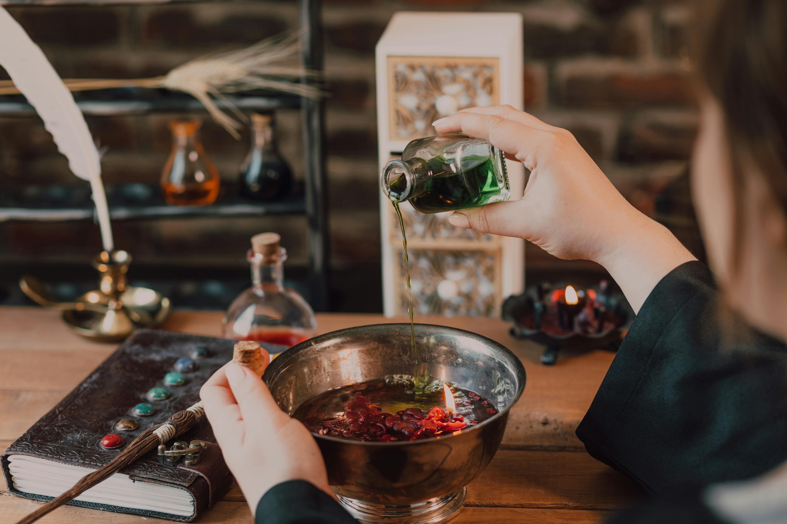

See what people are saying
Real stories from our customers and their magical experiences
When I came into Pixie Potions, I was desperate. I had been dealing with a blight placed on my farmland by a feral witch. I had tried everything-
and I mean everything-to get my crop to yield, and nothing was working. That is, until one of my friends suggested I check out Pixie Potions. I
was rather skeptical...a potion shop? For a field curse? But I decided it was worth the shot, and I'm so glad that I did. Lady Alice fixed me up
with a custom solution for my land and it worked absolute wonders. I couldn't be happier with my purchase and experience with the shop.
- Anonymous
I heard about the 'Special Spirits' and I just had to see what mine would be! So, I followed the instructions on the website to find this place, and after one of the kind workers asked me for my name, he showed me to the Special Spirits and I got one. Yo, I can speak with cats! I love cats, and that effect was so unexpected, but so perfect. I highly recommend others find out what they can do, too.
- Anonymous
I got into a rather nasty accident at the smithy where I work, and nearly lost my whole damned arm. I couldn't work in my condition, and my family would've been up a crick without my income. So, I decided to consult Lady Alice at Pixie Potions, and she told me that my arm could be fixed by one of their most popular concoctions. We exchanged pleasantries, and she got me to get the 'Restorative Potion'. My recovery only took 5 days, when I was sure it would take months. No complaints here.
- Anonymous
